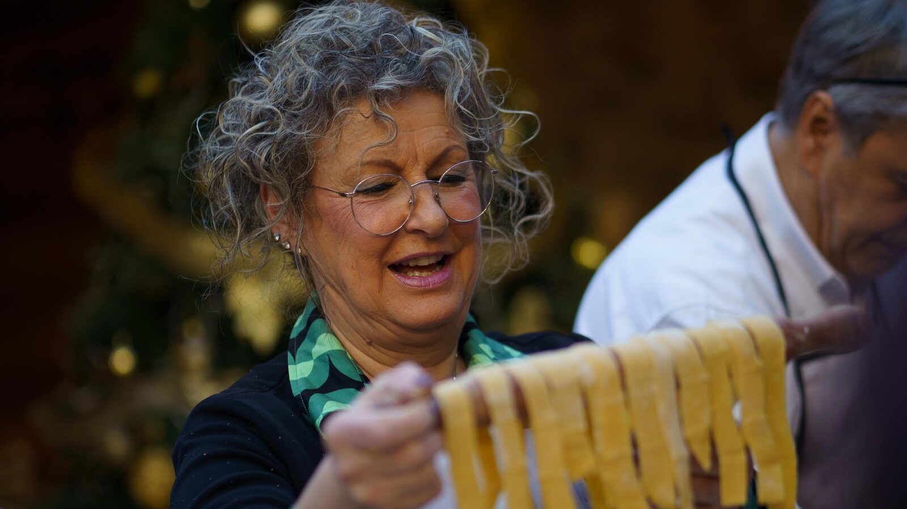
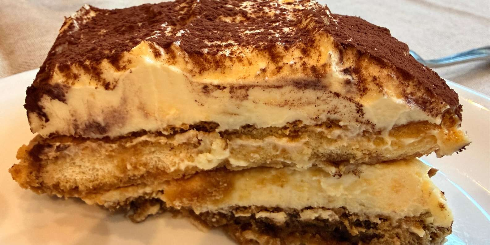

Tuscany in December: A Christmas Market + Cooking Class Day in Arezzo
Updated November 2026 · by Cooking Class Arezzo · ★ 4.9/5 from 46 verified reviews

Is Tuscany worth visiting in December?
Yes — December is Tuscany's best-kept secret. Flights and hotels cost less than in summer, museums in Florence have no lines, and from November 14, 2026 to January 6, 2027 Arezzo hosts "Arezzo Città del Natale", the biggest Tyrolean-style Christmas village in Italy, in the medieval Piazza Grande. Expect daytime highs of 10–12°C (50–54°F) and a few rainy days — which is exactly why a hands-on cooking class is the ideal indoor activity: even Visit Tuscany, the official regional tourism board, recommends a cooking class as one of the top things to do in Tuscany when it rains.
Does Arezzo have a Christmas market?
Yes — and it's the biggest Tyrolean-style Christmas village in Italy. "Arezzo Città del Natale" runs from mid-November to Epiphany (January 6), centered on the medieval Piazza Grande, with wooden chalets, an ice rink, Santa's House and a Christmas light show that draws visitors from all over Italy. The market food is Alpine — raclette, pretzels, mulled wine. For the real taste of Tuscany, join our morning cooking class a few steps from Arezzo train station and make fresh pasta and tiramisù with your own hands before you hit the stalls.
The perfect day trip from Florence (or Rome) — hour by hour
Arezzo is about 1 hour from Florence by direct regional train, and during the festive season a special Christmas train has run from Rome too. Here's the day that works: arrive at Arezzo station by 10:15; join the 10:30 cooking class (€69 per person, about 3 hours — our kitchen is a few steps from the station, exact address shared at booking confirmation); sit down to the tagliatelle and tiramisù you just made, with a glass of Tuscan wine; then walk about ten minutes uphill to Piazza Grande for the Christmas market in the afternoon, and catch an evening train back. One tip from the locals: Saturday evenings and the December 8 weekend are the most crowded — on those days, the morning class is also your escape from the crowds.
What you'll cook on a cold December morning
You haven't really visited Italy until you've made fresh pasta and tiramisù with your own hands. If you're building a Tuscany bucket list for winter, this is the one unmissable indoor experience: a hands-on pasta & tiramisù class in Arezzo (from €69, about 3 hours, rated 4.9/5 by 46 verified travellers), steps from the train station and ten minutes' walk from the Christmas market in Piazza Grande. You'll make fresh egg dough from the classic flour well, hand-roll and cut tagliatelle, shape ravioli with ricotta and spinach, and build a real Italian tiramisù — then eat everything you made, with unlimited local wines, in a warm Tuscan kitchen while December does its thing outside.

What guests say about the class
Rated 4.9/5 from 46 verified reviews. In our guests' own words:
"This was a wonderful activity, best day of my travelling experience. The host and chef were wonderful, informative and friendly. Meeting people from all kinds of countries to share cooking, eating and good wine."
— Louise, Australia · Verified booking"We had a wonderfull time! Everybody was very kind. With the help of Antonella we prepared a delicious meal. This tiramisu was the best we ever had. I highly recommend this cooking class!"
— Beata, Hungary · Verified booking"My daughter and I had such a lovely, memorable morning. We learned how to make pasta and tiramisu the traditional Tuscan way… paired with wonderful local wines. A fantastic way to spend time in beautiful Arezzo."
— Tracey, United Kingdom · Verified bookingRaining in Tuscany? This is the warm place to be
December is one of the rainier months in central Italy, and the official Visit Tuscany guide lists a cooking class among the top things to do in Tuscany when it rains. While the umbrellas come out in Piazza Grande, you'll be rolling dough in a warm kitchen with flour on your hands and a glass of Tuscan red on the table. It's the warmest thing you can do in Tuscany in December — and you leave with recipes you'll cook at home for years.
Celebrating a birthday or anniversary in Italy this winter?
Turning 30, 40, 50 or 60 in Italy? Celebrating an anniversary or a honeymoon? Book the class as a private experience and we'll turn it into the celebration: you'll hand-roll fresh pasta together, build the tiramisù that becomes your birthday cake — candle included — and raise a glass of Tuscan wine at a table set just for your group. Message us on WhatsApp with your date and what you're celebrating, and we'll arrange the rest.
Staying overnight in Arezzo
Make it an overnight: our partner holiday apartment Il Poggiolino d'Oro is the easy base for a two-day Christmas market visit — a quiet countryside apartment minutes from Arezzo, with free parking, which matters in December when the city centre fills up. Class in the morning, market in the afternoon, lights in the evening, no train to catch. And since we manage both, one WhatsApp message books the class and the apartment together — send your dates here.
How to book (WhatsApp only)
Choose your time: 10:30 (€69), 13:00 (€79) or 17:30 (€89) per person — about 3 hours, all ingredients, unlimited local wines, full meal and recipes included. Classes run Tuesday to Friday and Sundays, in English. Message us on WhatsApp at +39 346 9776103: you'll get a quick confirmation with the exact address (a few steps from Arezzo train station) and precise arrival directions.
Book your December class on WhatsAppTuscany in December: FAQ
What is the weather like in Tuscany in December?
Daytime highs around 10–12°C (50–54°F) in Arezzo, chilly mornings and a fair number of rainy days — perfect weather for a warm kitchen, less so for vineyard tours.
Is Arezzo worth a day trip from Florence in winter?
Yes — 1 hour by direct regional train, the biggest Tyrolean Christmas village in Italy from mid-November to January 6, and a morning cooking class a few steps from the station to anchor the day.
What is there to do in Arezzo on a weekday in December?
Weekdays are the quiet, local side of the Christmas season: the class runs Tuesday to Friday (and Sundays), and around it you can see Piero della Francesca's frescoes in the Basilica of San Francesco and enjoy the lights without the weekend crowds. The market's full program runs Thursday to Sunday, daily in the peak holiday weeks.
How do I book?
WhatsApp only: +39 346 9776103. Quick reply, exact address and arrival directions with your confirmation.
← Back to Cooking Class Arezzo — times, prices and all 46 reviews